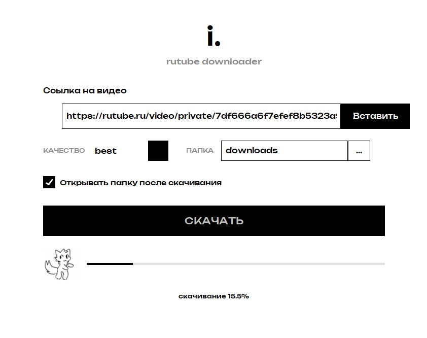

Программа запрашивает у Rutube все доступные потоки и отдаёт лучший. Можно зафиксировать качество — 1080, 720, 480 или 360.
Скачивает видео с Rutube в максимальном качестве — вплоть до 4K. Работает с публичными и приватными роликами, выбирает качество сам или по вашему указанию. Ничего лишнего: ссылка, качество, кнопка.

Интерфейс программы — белый фон, чёрный текст, шрифт Unbounded
Программа запрашивает у Rutube все доступные потоки и отдаёт лучший. Можно зафиксировать качество — 1080, 720, 480 или 360.
Поддерживаются приватные ссылки Rutube с ключом доступа. Вставляете ссылку целиком — программа разберётся сама.
Видео и аудио склеивается через ffmpeg в один файл. Открывается любым плеером без дополнительных кодеков.
Полоска загрузки, проценты и статус прямо в окне. Анимация идёт ровно столько, сколько идёт скачивание.
Куда класть файл — решаете вы. По окончании можно автоматически открыть папку с результатом.
Без аккаунтов, подписок, рекламы и телеметрии. Один файл, двойной клик — и всё работает.
Скопируйте адрес ролика в браузере и вставьте в поле — кнопкой «Вставить», Ctrl+V или правой кнопкой мыши.
Оставьте «best» для максимального разрешения или укажите нужное: 1080, 720, 480, 360.
Прогресс идёт в окне. Готовый файл появится в выбранной папке, папку можно открыть автоматически.
Один файл. Двойной клик — и программа открыта.
Скачать .exeДа, если у вас есть действующая ссылка с ключом доступа. Вставьте её целиком — параметр ключа передаётся автоматически.
Всё, что доступно у ролика на Rutube — вплоть до 4K. Значение «best» в меню качества выбирает максимально доступный поток.
Нет. ffmpeg уже встроен в программу и используется для склейки видео и аудио в один mp4-файл.
Нет. Она бесплатна, не содержит рекламы, не требует регистрации и не собирает данные.
Укажите нужную папку в поле «Папка» или выберите её кнопкой «...». Галочка «Открывать папку после скачивания» покажет результат сразу.